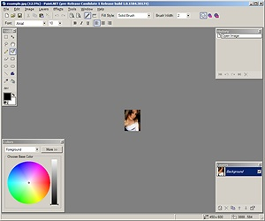
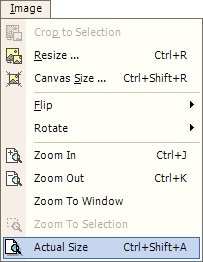

Actual Size Operation
|  The Actual Size Operation (Image-->Actual Size) allows the user to quickly display the image using the actual dimensional size rather then the current zoomed in or out size. For example, a 800x600 can be zoomed out to 400x300 on the screen (a 50% zoom-out). While this maybe helpful, you may eventually want to view the image in its actual size which would be 800x600 pixels. Using Actual Size will quickly make this happen. |
|  |
|
| This is an image which underwent many zoom-out operations. Therefore, it appears very small in the Paint.NET application. | Using the Actual Size Operation, the image is returned to its dimensional size. Notice: The Zooming and the Actual Size operations do not alter the file size, just how the image appears on the screen. |